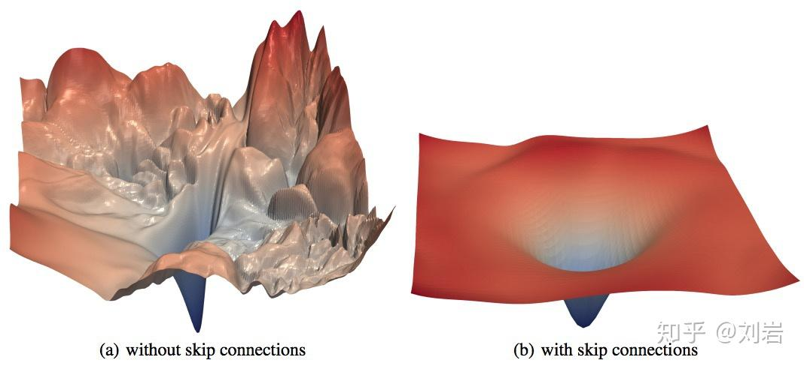
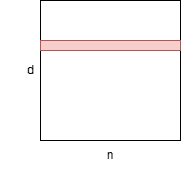
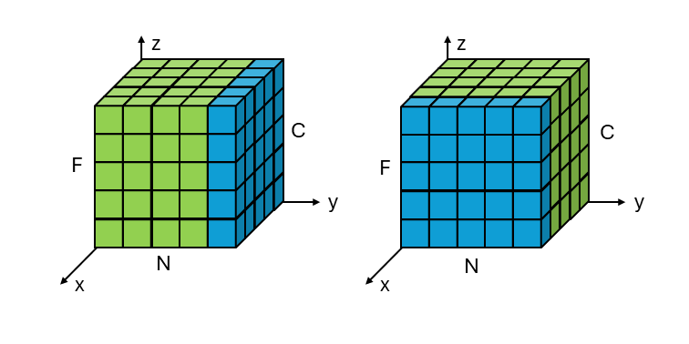

Reading: Foundation Papers
Published:
（新坑：经典论文圣地巡礼）
Transformers
The transformer model is a type of neural network architecture that excels at processing sequential data, most prominently associated with large language models (LLMs). Transformer models have also achieved elite performance in other fields of artificial intelligence (AI), such as computer vision, speech recognition and time series forecasting. reference
@article{vaswani2017attention,
title={Attention is all you need},
author={Vaswani, Ashish and Shazeer, Noam and Parmar, Niki and Uszkoreit, Jakob and Jones, Llion and Gomez, Aidan N and Kaiser, {\L}ukasz and Polosukhin, Illia},
journal={Advances in neural information processing systems},
volume={30},
year={2017}
}
something
Batch Normalization
Training Deep Neural Networks is complicated by the fact that the distribution of each layer’s inputs changes during training, as the parameters of the previous layers change. This slows down the training by requiring lower learning rates and careful parameter initialization, and makes it notoriously hard to train models with saturating nonlinearities. We refer to this phenomenon as internal covariate shift, and address the problem by normalizing layer in puts. Our method draws its strength from making normalization a part of the model architecture and performing the normalization for each training mini-batch. Batch Normalization allows us to use much higher learning rates and be less careful about initialization. It also acts as a regularizer, in some cases eliminating the need for Dropout. Applied to a state-of-the-art image classification model, Batch Normalization achieves the same accuracy with 14 times fewer training steps, and beats the original model by a significant margin. Using an ensemble of batch normalized networks, we improve upon the best published result on ImageNet classification: reaching 4.9% top-5 validation error (and 4.8% test error), exceeding the ac curacy of human raters.
@misc{ioffe2015batchnormalizationacceleratingdeep,
title={Batch Normalization: Accelerating Deep Network Training by Reducing Internal Covariate Shift},
author={Sergey Ioffe and Christian Szegedy},
year={2015},
eprint={1502.03167},
archivePrefix={arXiv},
primaryClass={cs.LG},
url={https://arxiv.org/abs/1502.03167},
}
深度神经网络训练过程中，每一层的输入分布都会随着前一层参数的变化而变化，往往需要较低的学习率和精细的参数初始化，从而减缓了训练速度，并且使得训练具有饱和非线性（注：参考AlexNet论文，这里的非线性指的是类似sigmoid和tanh这样的激活函数，饱和指的是这个函数是个有界函数，比如sigmoid上界是1下界是0；同理可知，非饱和就是类似ReLU这种没有上界的函数，因为随自变量增加函数值会一直增加）的模型变得非常困难。（注：样本方差较大时，容易梯度消失，直观理解就是饱和函数越往两侧延伸越平）这种现象被称为内部协变量移位（Internal Covariate Shift, ICS），BN就是来解决这个问题的。（注：参考这篇论文和这篇博客，有大佬证明BN与ICS无关，BN起到平滑损失平面(loss landscape)的作用，就是让原本崎岖的损失平面变得平滑）BN将归一化作为模型架构的一部分，并对mini-batch训练的每一步执行归一化。BN允许我们使用更高的学习率，并且对初始化不那么小心。它还充当正则化器，在某些情况下消除了Dropout的需要。

可以理解成BN让左边变成右边[reference]
在一个\(d\)维输入的层中，输入为： \(x=(x^{(1)}...x^{(d)})\) 随后对每一维度归一化： \(\hat{x}^{(k)}=\frac{x^{(k)}-\mathrm{E}[x^{(k)}]}{\sqrt{\mathrm{Var}[x^{(k)}]}}\)

BN大致的样子
BN会对模型的收敛有帮助，但是也可能破坏已经学习到的特征。为了解决这个问题，BN添加了两个可以学习的变量\(\gamma\)和\(\beta\)用于控制网络能够表达直接映射，也就是能够还原BN之前学习到的特征,\(y^{(k)}=\gamma^{(k)}\hat{x}^{(k)}+\beta^{(k)}\) 可以理解为一个映射： \(\mathrm{BN}_{\gamma,\beta}:x_{1...m}\to y_{1...m}\)。[reference]
算法：
Input:
mini-batch样本
\(\mathcal{B}=\{x_{1...m}\}\) , 待学习的参数\(\gamma\)和\(\beta\)
Output:
\[\{y_i=\mathrm{BN}_{\gamma,\beta}(x_i)\}\]-
计算mini-batch的均值mean
\[\mu_{\mathcal{B}}\leftarrow\frac{1}{m}\sum_{i=1}^m{x_i}\] -
计算mini-batch的方差variance
\[\sigma_{\mathcal{B}}^2\leftarrow\frac{1}{m}\sum_{i=1}^m{(x_i-\mu_{\mathcal{B}})^2}\] -
归一化normalize
\[\hat{x}_i\leftarrow\frac{x_i-\mu_{\mathcal{B}}}{\sqrt{\sigma_{\mathcal{B}}^2+\epsilon}}\] -
缩放scale偏移shift
\[y_i\leftarrow\gamma\hat{x}_i+\beta\equiv\mathrm{BN}_{\gamma,\beta}(x_i)\]
链式法则推导
批量归一化（Batch Normalization，BN）在反向传播中的推导基于链式法则，通过引入中间变量（均值\(\mu_{\mathcal{B}}\)和方差\(\sigma_{\mathcal{B}}^2\)）逐步计算梯度。整个过程由初等运算构成，且由于\(\epsilon>0\)保证分母不为零，因此处处可导。
训练过程中，损失函数\(\mathcal{l}\)对输入\(x_i\)和参数\(\gamma, \beta\)的梯度通过链式法则计算。
-
计算\(\mathscr{l}\)对归一化\(\hat{x}_i\)的偏导数
根据 \(y_i=\gamma\hat{x}_i+\beta\) 直接计算偏导数
\[\frac{\partial\mathscr{l}}{\partial\hat{x}_i}=\frac{\partial\mathscr{l}}{\partial y_i}\gamma\] -
计算\(\mathscr{l}\)对方差的偏导数
方差影响所有归一化值\(\hat{x}_i\)，因此有
\[\frac{\partial\mathscr{l}}{\partial\sigma_{\mathcal{B}}^2}=\sum_{i=1}^m{\frac{\partial\mathscr{l}}{\partial\hat{x}_i}\cdot\frac{\partial\hat{x}_i}{\partial\sigma_{\mathcal{B}}^2}}\]计算归一化\(\hat{x}_i\)对方差的偏导数
\[\frac{\partial\hat{x}_i}{\partial\sigma_{\mathcal{B}}^2}=-\frac{1}{2}(x_i-\mu_{\mathcal{B}})(\sigma_{\mathcal{B}}^2+\epsilon)^{-\frac{3}{2}}\]带入
\[\frac{\partial\mathscr{l}}{\partial\sigma_{\mathcal{B}}^2}=-\frac{1}{2}\sum_{i=1}^m{\frac{\partial\mathscr{l}}{\partial\hat{x}_i}\cdot(x_i-\mu_{\mathcal{B}})(\sigma_{\mathcal{B}}^2+\epsilon)^{-\frac{3}{2}}}\] -
计算\(\mathscr{l}\)对均值的偏导数
均值影响所有归一化\(\hat{x}_i\)和方差，因此有
\[\frac{\partial\mathscr{l}}{\partial\mu_{\mathcal{B}}}=\sum_{i=1}^m{\frac{\partial\mathscr{l}}{\partial\hat{x}_i}\cdot\frac{\partial\hat{x}_i}{\partial\mu_{\mathcal{B}}}+\frac{\partial\mathscr{l}}{\partial\sigma_{\mathcal{B}}^2}\cdot\frac{\partial\sigma_{\mathcal{B}}^2}{\partial\mu_{\mathcal{B}}}}\]分别求归一化\(\hat{x}_i\)对均值的偏导数和方差对均值的偏导数
\[\frac{\partial\hat{x}_i}{\partial\mu_{\mathcal{B}}}=-\frac{1}{\sqrt{\sigma_{\mathcal{B}}^2+\epsilon}}\] \[\frac{\partial\sigma_{\mathcal{B}}^2}{\partial\mu_{\mathcal{B}}}=-\frac{2}{m}\sum_{i=1}^m{(x_i-\mu_{\mathcal{B}})}\]带入
\[\frac{\partial\mathscr{l}}{\partial\mu_{\mathcal{B}}}=\sum_{i=1}^m{\frac{\partial\mathscr{l}}{\partial\hat{x}_i}\cdot(-\frac{1}{\sqrt{\sigma_{\mathcal{B}}^2+\epsilon}})+\frac{\partial\mathscr{l}}{\partial\sigma_{\mathcal{B}}^2}\cdot(-\frac{2}{m}\sum_{i=1}^m{(x_i-\mu_{\mathcal{B}})})}\]观察发现，方差对均值求偏导数等于0，所以第二项可以删去
\[\frac{\partial\sigma_{\mathcal{B}}^2}{\partial\mu_{\mathcal{B}}}=-\frac{2}{m}\sum_{i=1}^m{(x_i-\mu_{\mathcal{B}})}=0\]化简后
\[\frac{\partial\mathscr{l}}{\partial\mu_{\mathcal{B}}}=\sum_{i=1}^m{\frac{\partial\mathscr{l}}{\partial\hat{x}_i}\cdot(-\frac{1}{\sqrt{\sigma_{\mathcal{B}}^2+\epsilon}})}\]（注：直观理解也许是这样的，在同一个分布里，均值和方差之间没有相关性。我瞎说的。。）
-
计算\(\mathscr{l}\)对原始\(x_i\)的偏导数
输入\(x_i\) 只影响\(\hat{x}_i\)，均值和方差，因此有（只对i这一个样本产生影响）
\[\frac{\partial\mathscr{l}}{\partial x_i}=\frac{\partial\mathscr{l}}{\partial\hat{x}_i}\cdot\frac{\partial\hat{x}_i}{\partial x_i}+ \frac{\partial\mathscr{l}}{\partial\mu_{\mathcal{B}}}\cdot\frac{\partial\mu_{\mathcal{B}}}{\partial x_i}+ \frac{\partial\mathscr{l}}{\partial\sigma_{\mathcal{B}}^2}\cdot\frac{\partial\sigma_{\mathcal{B}}^2}{\partial x_i}\]分别求\(\hat{x}_i\)对x的偏导数，均值对x的偏导数和方差对x的偏导数
\[\frac{\partial\hat{x}_i}{\partial x_i}=\frac{1}{\sqrt{\sigma_{\mathcal{B}}^2+\epsilon}}\] \[\frac{\partial\mu_{\mathcal{B}}}{\partial x_i}=\frac{1}{m}\] \[\frac{\partial\sigma_{\mathcal{B}}^2}{\partial x_i}=\frac{2}{m}(x_i-\mu_{\mathcal{B}})\]带入
\[\frac{\partial\mathscr{l}}{\partial x_i}=\frac{\partial\mathscr{l}}{\partial\hat{x}_i}\cdot\frac{1}{\sqrt{\sigma_{\mathcal{B}}^2+\epsilon}}+ \frac{\partial\mathscr{l}}{\partial\mu_{\mathcal{B}}}\cdot\frac{1}{m}+ \frac{\partial\mathscr{l}}{\partial\sigma_{\mathcal{B}}^2}\cdot\frac{2}{m}(x_i-\mu_{\mathcal{B}})\] -
计算\(\mathscr{l}\)对\(\gamma\)和\(\beta\)的偏导数
根据 \(y_i=\gamma\hat{x}_i+\beta\) 直接计算偏导数
\[\frac{\partial\mathscr{l}}{\partial\gamma}=\sum_{i=1}^m{\frac{\partial\mathscr{l}}{\partial y_i}\cdot\frac{\partial y_i}{\partial\gamma}}=\sum_{i=1}^m{\frac{\partial\mathscr{l}}{\partial y_i}\cdot\hat{x}_i}\] \[\frac{\partial\mathscr{l}}{\partial\beta}=\sum_{i=1}^m{\frac{\partial\mathscr{l}}{\partial y_i}\cdot\frac{\partial y_i}{\partial\beta}}=\sum_{i=1}^m{\frac{\partial\mathscr{l}}{\partial y_i}}\]
滑动平均
在训练的时候，我们采用SGD算法可以获得该批量中样本的均值和方差。但是在测试的时候，数据都是以单个样本的形式输入到网络中的。在计算BN层的输出的时候，我们需要获取的均值和方差是通过训练集统计得到的。具体的讲，我们会从训练集中随机取多个批量的数据集，每个批量的样本数是m，测试的时候使用的均值和方差是这些批量的均值。[reference]
\[\mathrm{E}[x]\leftarrow\mathrm{E}_{\mathcal{B}}[\mu_{\mathcal{B}}]\] \[\mathrm{Var}[x]\leftarrow\frac{m}{m-1}\mathrm{E}_{\mathcal{B}}[\sigma_{\mathcal{B}}^2]\][这篇博客]和原论文还提到了一个叫做滑动平均的东西。上面的过程明显非常耗时，更多的开源框架是在训练的时候，顺便就把采样到的样本的均值和方差保留了下来。在Keras中，这个变量叫做滑动平均（moving average），对应的均值叫做滑动均值（moving mean），方差叫做滑动方差（moving variance）。它们均使用moving_average_update进行更新。在测试的时候则使用滑动均值和滑动方差代替上面的\(\mathrm{E}[x]\)和\(\mathrm{Var}[x]\)
其中α是非常接近1的超参数，叫衰减率（？）或遗忘因子（？），一般设置成0.99或0.9999
推理时的滑动平均：
将 \(y=\mathrm{BN}_{\gamma,\beta}(x)\) 替换为 \(y=\gamma\cdot\frac{x-\mathrm{E}[x]}{\sqrt{\mathrm{Var}[x]+\epsilon}}+\beta\) 这里的\(\mathrm{E}[x]\)和\(\mathrm{Var}[x]\)都是采样后的值
总结
- BN在CNN里效果较好，在RNN里效果较差。原文里有写CNN，在第3.2章。
- BN允许高学习率，在原文第3.3章中给出了推导证明。
- BN向模型中加入了正则化，省去了Dropout
Layer Normalization
Layer Normalization stabilizes and accelerates the training process in deep learning. In typical neural networks, activations of each layer can vary drastically which leads to issues like exploding or vanishing gradients which slow down training. Layer Normalization addresses this by normalizing the output of each layer which helps in ensuring that the activations stay within a stable range. reference
@misc{ba2016layernormalization,
title={Layer Normalization},
author={Jimmy Lei Ba and Jamie Ryan Kiros and Geoffrey E. Hinton},
year={2016},
eprint={1607.06450},
archivePrefix={arXiv},
primaryClass={stat.ML},
url={https://arxiv.org/abs/1607.06450},
}
参考 [博客]
在Layer Norm之前的是Batch Norm [1] 。BN的限制是：
-
某一层的输出变化往往会导致下一层输入总和的高度相关变化，尤其是对于输出变化较大的ReLU单元。用LN：通过固定每层输入总和的均值和方差，可以减少“协变量偏移”问题。
-
在LN下，同一层中的所有隐藏单元共享相同的归一化参数\(\mu\)和\(\sigma\)，但不同的训练样本具有不同的归一化参数。与BN不同，LN不对mini-batch的大小施加任何限制，并且可以在batch大小为1的纯在线模式下使用。
示意图：

在FFN中，第\(\mathscr{l}\)层神经元输入总和的向量表示为\(a_i^l={w_i^l}^Th^l\)
\[h_i^{l+1}=f(a_i^l+b_i^l)\]其中，\(f(\cdot)\)是element-wise非线性激活函数，如ReLU，\(w_i^l\)是第l层第i个神经元的权重向量，\(b_i^l\)是第l层第i个神经元的偏置向量。神经网络中的参数是使用基于梯度的优化算法来学习的，而梯度是通过反向传播来计算的。
计算均值和方差：
\[\mu^l=\frac{1}{H}\sum_{i=1}^H{a_i^l}\] \[\sigma^l=\sqrt{\frac{1}{H}\sum_{i=1}^H{(a_i^l-\mu^l)^2}}\]其中，H表示第l层中的隐藏单元个数。
RNN
在RNN中，F表示隐藏层维度hidden dimension或嵌入维度emmbedding dimension，N表示批量大小batch size，C表示序列长度sequence length。
（待填：RNN下LN公式，RNN适合LN不适合BN的原因，CNN适合BN不适合LN的原因）